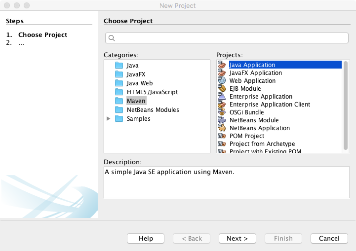
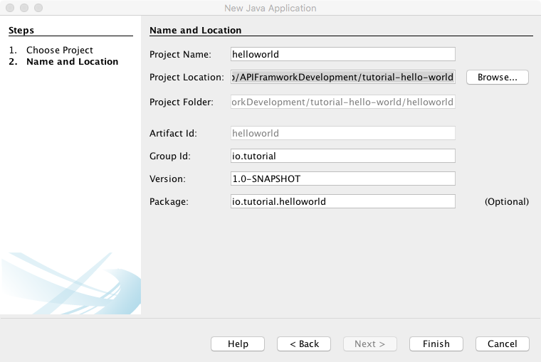

We will create simple session API to get list of dummy session.
Create Maven Project using Netbean
|
Note
|
Below steps are optional. You can clone API Framwork Start project and use tutorial-simple-get-api project. |
-
Create Project Folder tutorial-simple-get-api. This will be used as base folder.
-
Create new project
 -
Save project to tutorial-simple-get-api location
 -
Add required dependencies to POM
1 <dependency> 2 <groupId>in.erail</groupId> 3 <artifactId>glue</artifactId> 4 <version>1.0-SNAPSHOT</version> 5 </dependency> 6 <dependency> 7 <groupId>in.erail</groupId> 8 <artifactId>api-framwork</artifactId> 9 <version>1.0-SNAPSHOT</version> 10 </dependency> 11 <dependency> 12 <groupId>in.erail</groupId> 13 <artifactId>api-framwork</artifactId> 14 <version>1.0-SNAPSHOT</version> 15 <classifier>common-config</classifier> 16 <type>zip</type> 17 </dependency> -
Additional project dependencies
1 <dependency> 2 <groupId>io.vertx</groupId> 3 <artifactId>vertx-unit</artifactId> 4 <version>3.5.0</version> 5 <scope>test</scope> 6 </dependency> 7 <dependency> 8 <groupId>junit</groupId> 9 <artifactId>junit</artifactId> 10 <version>4.12</version> 11 <scope>test</scope> 12 </dependency> -
Create tutorial-simple-get-api/config-layers/common and tutorial-simple-get-api/config-layers/test folder to store all configuration
Notecommon configuration is for production use. test configuration can be used to add new or override any configuration during unit test -
Create tutorial-simple-get-api/src/assembly/common-config.xml
1 <?xml version="1.0" encoding="UTF-8"?> 2 <assembly xmlns="http://maven.apache.org/plugins/maven-assembly-plugin/assembly/1.1.2" 3 xmlns:xsi="http://www.w3.org/2001/XMLSchema-instance" 4 xsi:schemaLocation="http://maven.apache.org/plugins/maven-assembly-plugin/assembly/1.1.2 http://maven.apache.org/xsd/assembly-1.1.2.xsd"> 5 <id>common-config</id> 6 <formats> 7 <format>zip</format> 8 </formats> 9 <fileSets> 10 <fileSet> 11 <directory>${project.basedir}/config-layers/common</directory> 12 <outputDirectory>/config</outputDirectory> 13 </fileSet> 14 </fileSets> 15 </assembly>
This configuration will make sure that your common-config config layers is packed and installed as artefact in maven repository.
-
Add plugins to Maven
1 <plugin> 2 <artifactId>maven-assembly-plugin</artifactId> 3 <version>2.5.3</version> 4 <executions> 5 <execution> 6 <id>common-config</id> 7 <phase>package</phase> 8 <goals> 9 <goal>single</goal> 10 </goals> 11 <configuration> 12 <outputDirectory>${project.build.directory}/build/config</outputDirectory> 13 <descriptor>src/assembly/common-config.xml</descriptor> 14 </configuration> 15 </execution> 16 </executions> 17 </plugin> 18 <plugin> 19 <groupId>org.apache.maven.plugins</groupId> 20 <artifactId>maven-surefire-plugin</artifactId> 21 <version>2.20.1</version> 22 <configuration> 23 <argLine>-Dvertx.logger-delegate-factory-class-name=io.vertx.core.logging.Log4j2LogDelegateFactory -Dglue.layers=${settings.localRepository}/in/erail/api-framwork/1.0-SNAPSHOT/api-framwork-1.0-SNAPSHOT-common-config.zip,${project.basedir}/config-layers/common,${project.basedir}/config-layers/test</argLine> 24 </configuration> 25 </plugin> 26 <plugin> 27 <groupId>org.apache.maven.plugins</groupId> 28 <artifactId>maven-dependency-plugin</artifactId> 29 <version>2.8</version> 30 <executions> 31 <execution> 32 <id>copy-installed</id> 33 <phase>install</phase> 34 <goals> 35 <goal>copy</goal> 36 </goals> 37 <configuration> 38 <artifactItems> 39 <artifactItem> 40 <groupId>in.erail</groupId> 41 <artifactId>api-framwork</artifactId> 42 <version>1.0-SNAPSHOT</version> 43 <classifier>common-config</classifier> 44 <type>zip</type> 45 </artifactItem> 46 </artifactItems> 47 <outputDirectory>${project.build.directory}/build/config</outputDirectory> 48 </configuration> 49 </execution> 50 <execution> 51 <id>copy-dependencies</id> 52 <phase>prepare-package</phase> 53 <goals> 54 <goal>copy-dependencies</goal> 55 </goals> 56 <configuration> 57 <outputDirectory>${project.build.directory}/build/${project.artifactId}-${project.version}-lib/</outputDirectory> 58 <overWriteReleases>false</overWriteReleases> 59 <overWriteSnapshots>false</overWriteSnapshots> 60 <overWriteIfNewer>true</overWriteIfNewer> 61 </configuration> 62 </execution> 63 </executions> 64 </plugin> 65 <plugin> 66 <groupId>org.apache.maven.plugins</groupId> 67 <artifactId>maven-jar-plugin</artifactId> 68 <version>3.0.2</version> 69 <configuration> 70 <outputDirectory>${project.build.directory}/build</outputDirectory> 71 <archive> 72 <manifest> 73 <addClasspath>true</addClasspath> 74 <classpathPrefix>${project.artifactId}-${project.version}-lib/</classpathPrefix> 75 <mainClass>in.erail.glue.Boot</mainClass> 76 </manifest> 77 </archive> 78 </configuration> 79 </plugin>Argument LineTo pass correct layer parameters to Test, we use argLine.
1 <plugin> 2 <groupId>org.apache.maven.plugins</groupId> 3 <artifactId>maven-surefire-plugin</artifactId> 4 <version>2.20.1</version> 5 <configuration> 6 <argLine>-Dvertx.logger-delegate-factory-class-name=io.vertx.core.logging.Log4j2LogDelegateFactory -Dglue.layers=${settings.localRepository}/in/erail/api-framwork/1.0-SNAPSHOT/api-framwork-1.0-SNAPSHOT-common-config.zip,${project.basedir}/config-layers/common,${project.basedir}/config-layers/test</argLine> 7 </configuration> 8 </plugin>Argument Value Description vertx.logger-delegate-factory-class-name
io.vertx.core.logging.Log4j2LogDelegateFactory
Enable Log4J based logging.
glue.layers
Layer Description ${settings.localRepository}/in/erail/api-framwork/1.0-SNAPSHOT/api-framwork-1.0-SNAPSHOT-common-config.zip
API Framework Configuration Layer
${project.basedir}/config-layers/common
Our project configuration layer
${project.basedir}/config-layers/test
Our project test configuration layer. Any test specific configuration can be done in this layer
All configuration layers. Configuration layers are read in same order as defined in argument. Layer configuration is read from right to left. Means, left configuration will override right configuration, if same configuration is also present in right layer.
NoteConfiguration are managed at individual property level. So, if two properties file have same configuration file, but, different property inside those configuration file, then configuration file is merged. For more information read Glue documentation.
Step 1: Create Open API 3 Service Definition
To make life easy, we have used Apicurio to create Open API 3 definition. Below is definition
1 {
2 "openapi": "3.0.0",
3 "info": {
4 "title": "tutorial-api",
5 "version": "1.0.0"
6 },
7 "paths": {
8 "/session": {
9 "get": {
10 "summary": "Get all session messages",
11 "description": "Return all session messages",
12 "operationId": "API_SESSION_GET",
13 "responses": {
14 "200": {
15 "description": "Return all messages",
16 "content": {
17 "application/json": {
18 "schema": {
19 "type": "array",
20 "items": {
21 "$ref": "#/components/schemas/message"
22 }
23 }
24 }
25 }
26 }
27 }
28 }
29 }
30 },
31 "components": {
32 "schemas": {
33 "message": {
34 "title": "Root Type for message",
35 "description": "The root of the message type's schema.",
36 "type": "object",
37 "properties": {
38 "message": {
39 "type": "string"
40 },
41 "time": {
42 "type": "string"
43 }
44 }
45 }
46 }
47 }
48 }Our API will have single URL /session (like http://localhost:8888/v1/session). Session is not related to actual Vertx session.
On get request, session API will return all session messages.
|
Note
|
Each method requiring processing must have unique OperationId. OperationId is used for processing request from method. |
Configure API Framework to use service definition
Copy openapi3.json to config-layers/common/in/erail/route/openapi3.json. Now API Framework is configured to handle API Request. Next step is to write code to handle request.
Step 2: Write API Request Handling
Basic request handling flow
-
Request Processing (Step 1 and 6) is synchronous. In case Service fails to response within predefined time limit (/io/vertx/core/eventbus/DeliveryOptions.sendTimeout). request is canceled and fail response is sent back.
-
For each operationId defined in Open API definition, a service is registered. Service contains mapping of Operation Id and UniqueServiceId. Whenever request comes it is converted into EventBus message and sent on UniqueServiceId (Steps 2-3).
-
Step 2-5 are asynchronous.
Handle GET method called on /session URL
Create Service Class
1 package in.erail.tutorial;
2
3 import in.erail.common.FramworkConstants;
4 import in.erail.service.RESTServiceImpl;
5 import io.vertx.core.json.JsonArray;
6 import io.vertx.core.json.JsonObject;
7 import io.vertx.reactivex.core.eventbus.Message;
8
9 public class SessionGetService extends RESTServiceImpl {
10
11 private JsonArray mSessions = new JsonArray();
12
13 public SessionGetService() {
14 mSessions.add("S1");
15 mSessions.add("S2");
16 mSessions.add("S3");
17 mSessions.add("S4");
18 mSessions.add("S5");
19 }
20
21 @Override
22 public void process(Message<JsonObject> pMessage) {
23 pMessage.reply(new JsonObject().put(FramworkConstants.RoutingContext.Json.BODY, getSessions()));
24 }
25
26 public JsonArray getSessions() {
27 return mSessions;
28 }
29
30 public void setSessions(JsonArray pSessions) {
31 this.mSessions = pSessions;
32 }
33
34 }Service class must implement in.erail.service.RESTService interface. A helper class is
provided to ease development in.erail.service.RESTServiceImpl
As parameter, Message Object provides JsonObject. JsonObject contains below fields
| Field Name | Description |
|---|---|
header |
Contains all request headers |
param |
Contains all request parameters |
query |
Contains all query parameters |
body |
In case of POST request, contains body |
Reply JSON Object you can have below fields
| Field Name | Default | Description |
|---|---|---|
header |
No headers are added |
Headers will be added to response header |
body |
Response content is blank |
Body is sent in response |
statusCode |
200 |
Response HTTP status |
Create Service Component
Create below Component configuration file and place it in /config-layers/common/in/erail/tutorial/SessionGetService
1 #/in/erail/tutorial/SessionGetService
2 $class=in.erail.tutorial.SessionGetService
3
4 operationId=API_SESSION_GET
5 serviceUniqueId=API_SESSION_GET
6 vertx^=/io/vertx/core/VertxInstance.vertx
7 enable=true
8 log=trueIn above configuration, operationId and serviceUniqueId are same. But, you can give
serviceUniqueId different name, make sure that it is unique across all services.
Add service to OpenAPI3RouteBuilder
1 #/in/erail/route/OpenAPI3RouteBuilder
2
3 services+=\
4 /in/erail/tutorial/SessionGetServiceOpenAPI3RouteBuilder will make sure, that, request received on URL with
operationId as defined in SessionService component is forwarded to serviceUniqueId
component via EventBus.
Now, our API is ready to use. Lets create a test class to test our service.
Step 3: Write Test to test our service
1 package in.erail.tutorial;
2
3 import in.erail.glue.Glue;
4 import in.erail.server.Server;
5 import io.vertx.core.json.JsonArray;
6
7 import io.vertx.ext.unit.Async;
8 import io.vertx.ext.unit.TestContext;
9 import io.vertx.ext.unit.junit.Timeout;
10 import io.vertx.ext.unit.junit.VertxUnitRunner;
11 import org.junit.Rule;
12 import org.junit.Test;
13 import org.junit.runner.RunWith;
14
15 @RunWith(VertxUnitRunner.class)
16 public class SessionTest {
17
18 @Rule
19 public Timeout rule = Timeout.seconds(2000);
20
21 @Test
22 public void testGetRequest(TestContext context) {
23
24 Async async = context.async(2);
25 Server server = Glue.instance().<Server>resolve("/in/erail/server/Server");
26 server
27 .getVertx()
28 .createHttpClient()
29 .get(server.getPort(), server.getHost(), "/v1/session")
30 .handler(response -> {
31 context.assertEquals(response.statusCode(), 200, response.statusMessage());
32 response.bodyHandler((event) -> {
33 JsonArray data = event.toJsonArray();
34 context.assertEquals(5, data.size());
35 async.countDown();
36 });
37 async.countDown();
38 })
39 .end();
40 }
41
42 }Step 4: Run API Server
After running maven install. You should have build folder inside target folder.
1 java \
2 -Dvertx.logger-delegate-factory-class-name=io.vertx.core.logging.Log4j2LogDelegateFactory \
3 -Dglue.layers=\
4 ./config/api-framwork-1.0-SNAPSHOT-common-config.zip,\
5 ./config/tutorial-simple-get-api-1.0-SNAPSHOT-common-config.zip \
6 -jar tutorial-simple-get-api-1.0-SNAPSHOT.jarGo to command prompt
1 curl http://localhost:8888/v1/session["S1","S2","S3","S4","S5"]